读书笔记
参考链接
https://www.synacktiv.com/sites/default/files/2021-10/2021_sthack_windows_lpe.pdf
https://github.com/synacktiv/Windows-kernel-SegmentHeap-Aligned-Chunk-Confusion
https://github.com/cbayet/Exploit-CVE-2017-6008/blob/master/Windows10PoolParty.pdf
https://www.blackhat.com/docs/us-16/materials/us-16-Yason-Windows-10-Segment-Heap-Internals-wp.pdf
https://www.blackhat.com/docs/us-16/materials/us-16-Yason-Windows-10-Segment-Heap-Internals.pdf
学习顺序建议先把用户态的segment heap了解下再去看内核态相对容易些。
Pool internals
先简单介绍下，segment heap之前只在用户态使用，且只针对部分系统特定进程，还有很多进程仍使用nt heap，19H1更新后segment heap被运用到了内核。
有关pool的一些结构体和基础知识这边不多提，可以看以前写过的博客。或者Tarjei Mandt的那篇Kernel Pool Exploitation on Windows 7. Blackhat DC, 2011.
win8后推出了NonPagedPoolNx，其实和nonpagedpool没什么两样，除了代码不可执行。这用来防止在nonpagedpool中存放shellcode执行。nonpagedpool的分配现在会默认使用nonpagedpoolnx，nonpagedpool的type还存在主要是因为要适配一些老的第三方驱动。
内核态的Segment Heap和用户态的很像，目的是为了给不同大小的堆块提供不同的特征。主要有以下四种
— Low Fragmentation Heap (abbr LFH): RtlHpLfhContextAllocate
— Variable Size (abbr VS): RtlHpVsContextAllocateInternal
— Segment Alloc (abbr Seg): RtlHpSegAlloc
— Large Alloc: RtlHpLargeAlloc
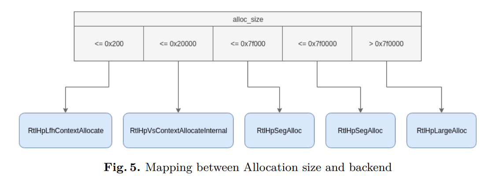
前三种涉及到了几个结构体_HEAP_SEG_CONTEXT，_HEAP_VS_CONTEXT，_HEAP_LFH_CONTEXT。_SEGMENT_HEAP存放了这些结构体。
1 | kd > dt nt! _SEGMENT_HEAP |
这类结构体存在五个，分别对应不同种类的pool type
— NonPaged pools (bit 0 unset)
— NonPagedNx pool (bit 0 unset and bit 9 set)
— Paged pools (bit 0 set)
— PagedSession pool (bit 5 and 1 set)
前三个都被存放在HEAP_POOL_NODES中，sessionpool的存放在current thread中
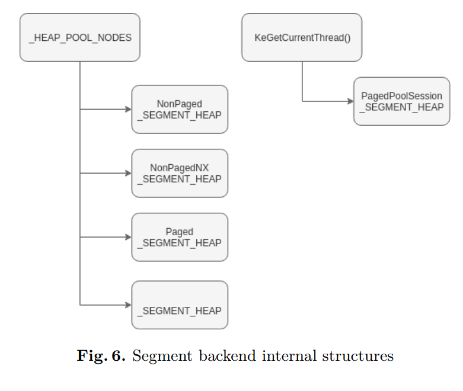
用户态的segment heap只用了一个Segment Allocation对于大小在128 KiB 和508 KiB。内核使用了俩个，第二个是对于大小在508 KiB 和 7 GiB的分配准备
Segment Backend
针对大小128 KiB 到 7 GiB.也会用去分配vs和lfh的backends
1 | 1: kd > dt nt! _HEAP_SEG_CONTEXT |
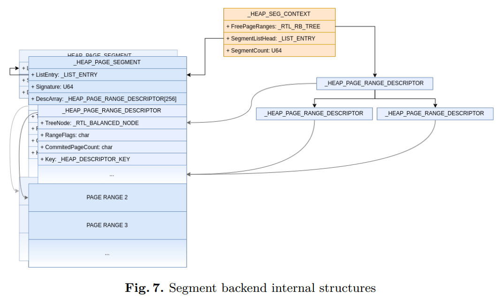
每个segment backend分配的内存都有可变大小的段，每个段都有很多可分配的页。如上图所示，每个段都会被单向链表链接即SegmentListHead，下面紧跟着256个_HEAP_PAGE_RANGE_DESCRIPTOR结构体
1 | 1: kd > dt nt! _HEAP_PAGE_SEGMENT |
1 | 1: kd > dt nt! _HEAP_PAGE_RANGE_DESCRIPTOR |
为了快速的寻找被释放的页范围。_HEAP_SEG_CONTEXT还维护了一个RB tree，每个都有一个signature成员，计算公式如下
Signature = Segment ^ SegContext ^ RtlpHpHeapGlobals ^ 0 xA2E64EADA2E64EAD ;
signature用于check他隶属于的_HEAP_SEG_CONTEXT结构体和对应的_SEGMENT_HEAP。
_HEAP_SEG_CONTEXT里的SegmentMask是用来帮助计算隶属于的段SegmentMask值为0xfffffffffff00000
Segment = Addr & SegContext -> SegmentMask ;
对应的PageRange也可以通过 _HEAP_SEG_CONTEXT里的UnitShift来计算，UnitShift值为12
PageRange = Segment + sizeof ( _HEAP_PAGE_RANGE_DESCRIPTOR ) * ( Addr - Segment ) >> SegContext -> UnitShift ;
当Segment Backend被其他的backend使用时_HEAP_PAGE_RANGE_DESCRIPTOR中的RangeFlags会设置对应的位数来表明是哪个backend请求的。
Variable Size Backend
可变大小堆针对大小在512 B 和 128 KiB之间。目的是为了提供针对释放对快的便捷再利用。
Variable Size Backend context存储在_HEAP_VS_CONTEXT结构体中
1 | 0: kd > dt nt! _HEAP_VS_CONTEXT |
被释放的堆块会被存放在FreeChunkTree中，这是个rb tree。当请求分配空间时，红黑树会返回他遍历到的与请求大小相等的的chunk或者是第一个比请求大小size大的chunk。
free chunk的头部是一个_HEAP_VS_CHUNK_FREE_HEADER结构体
1 | 0: kd > dt nt! _HEAP_VS_CHUNK_FREE_HEADER |
一旦chunk被找到，他会被分割成合适的大小，通过调用RtlpHpVsChunkSplit
所有被分配的chunk都会有个新头部_HEAP_VS_CHUNK_HEADER，如下所示
1 | 0: kd > dt nt! _HEAP_VS_CHUNK_HEADER |
头部的所有成员都会与RtlpHpHeapGlobals还有chunk地址进行xor
Chunk -> Sizes = Chunk -> Sizes ^ Chunk ^ RtlpHpHeapGlobals ;
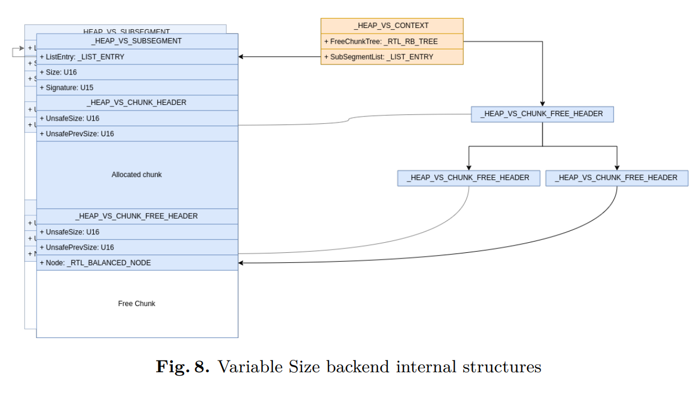
Low Fragmentation Heap Backend
LFH为一些较小的分配准备。大小在1 B 到 512 B之间。
LFH Backend context存储在_HEAP_LFH_CONTEXT结构体中如下所示
1 | 0: kd > dt nt! _HEAP_LFH_CONTEXT |
LFH最主要的特征使用了不同大小的bucket来防止内存碎片
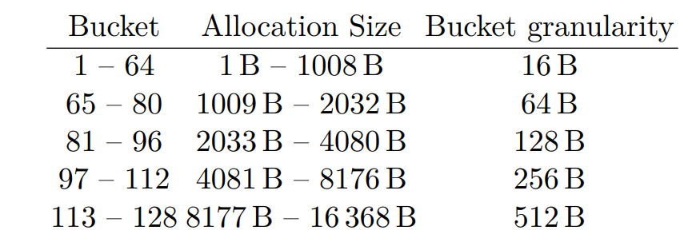
每个buckets都由段分配器来分配，位于_HEAP_LFH_CONTEXT的_HEAP_SUBALLOCATOR_CALLBACKS处
_HEAP_SUBALLOCATOR_CALLBACKS的一下成员会与LFH context地址还有RtlpHpHeapGlobals XOR
1 | callbacks . Allocate = RtlpHpSegLfhAllocate ; |
每个subsegment都有一个_HEAP_LFH_SUBSEGMENT头
1 | 0: kd > dt nt! _HEAP_LFH_SUBSEGMENT |
每个subsegment都会被分割成对应不同buckets大小的LFH块，为了知道哪个bucket正被使用，_HEAP_LFH_SUBSEGMENT里维护了一个bitmap
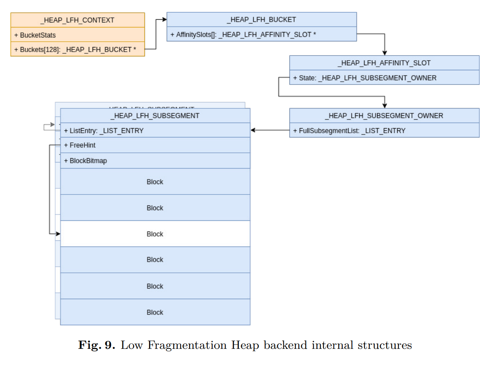
当有分配请求时，LFH分配器会先寻找_HEAP_LFH_SUBSEGMENT中的FreeHint来找到最近被释放的block，然后回遍历BlockBitmap，每次32 blocks来寻找free的block。因为RtlpLowFragHeapRandomData表，这个遍历会很随机。也就是这个导致了first fit不再适用。
根据每个bucket的征用情况，可能会启用一个Affinity Slot机制，通过把每个子段专用于每个cpu来简化分配。
Dynamic Lookaside
0x200到0xF80大小之间的free chunk会被暂时的存放到lookaside list中，这个和win7的很像。当chunk存放到list里后，不会调用对应chunk的free处理函数。
lookaside list是个_RTL_DYNAMIC_LOOKASIDE结构体，位于 _SEGMENT_HEAP 的UserContext处。
1 | 0: kd > dt nt! _RTL_DYNAMIC_LOOKASIDE |
每个free chunk会根据大小存放于_RTL_LOOKASIDE中
1 | 0: kd > dt nt! _RTL_LOOKASIDE |
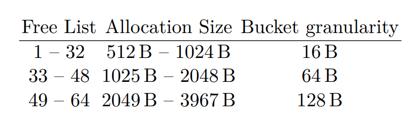
每次只会启用一个buckets。当一次分配请求完成时，lookaside对应的引用计数会更新。
POOL_HEADER
这个不多介绍了,主要提一下CacheAligned位。
1 | struct POOL_HEADER |
随着内核池分配器的更新很多结构都没啥用了。
1 | PoolHeader -> PoolTag = PoolTag ; |
PreviousSize Unused and kept to 0.
PoolIndex Unused.
BlockSize Size of the chunk. Only used to eventually store the chunk in the Dynamic Lookaside list
PoolType Usage did not change; used to keep the requested POOL_TYPE.
PoolTag Usage did not change; used to keep the PoolTag.
ProcessBilled Usage did not change; used to keep track of which process required the allocation, if the PoolType is PoolQuota (bit 3). The value is computed as follow:
ProcessBilled = chunk_addr ^ ExpPoolQuotaCookie ^ KPROCESS ;
可以发现和Quota Process Pointer Overwrite这个打法相关的结构体都没怎么变，除了ProcessBilled进行了xor。
下面讲讲CacheAligned，当PoolType中这个位被设置时，返回的内存会和cache line对齐，这个cache line大小取决于cpu一般都是0x40.
首先分配器会把请求大小加上ExpCacheLineSize
1 | if ( PoolType & 4 ) |
如果新的大小不能放在一整个页，那CacheAligned位会被忽视，然后被分配的chunk必须遵循三个条件
— the final allocation address must be aligned on ExpCacheLineSize;
— the chunk must have a POOL_HEADER at the very beginning of the chunk;
— the chunk must have a POOL_HEADER at the address of allocation minus sizeof(POOL_HEADER)
所以这可能会导致有俩个pool header
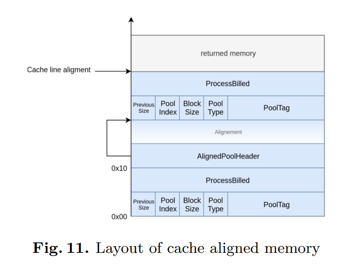
第一个header会在chunk开头，第二个会对齐。然后CacheAligned位会从第一个header移除，第二个header会有以下值
1 | PreviousSize Used to store the offset between the two headers. |
主要看prevsize，会被用于定位第一个header，这就是我们可以利用的点。
值得一提的是，假如有足够的空间，第一个header后可能会紧跟着一个AlignedPoolHeader指针用于指向下一个header，这个指针会和ExpPoolQuotaCookie xor。
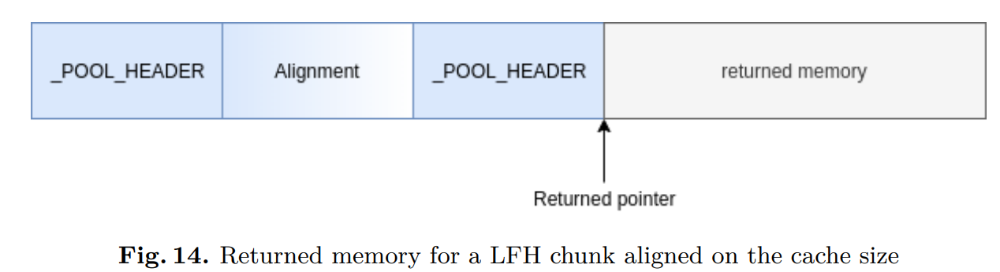
可以看到随着poolheader在win10中的“削弱”，从攻击的角度去讲其实少了许多办法，像ProcessBilled这种指针都会进行加密，如果没有leak其实利用起来难度很大。
假如数据可控，最好的办法还是直接覆写poolheader然后溢出到下一个chunk结构体，这只需要找到一个带有指针且用户态提供读写api的结构体即可。就像31956里面用到的wnf结构体。
还有俩种攻击poolheader的办法一个是修改blocksize
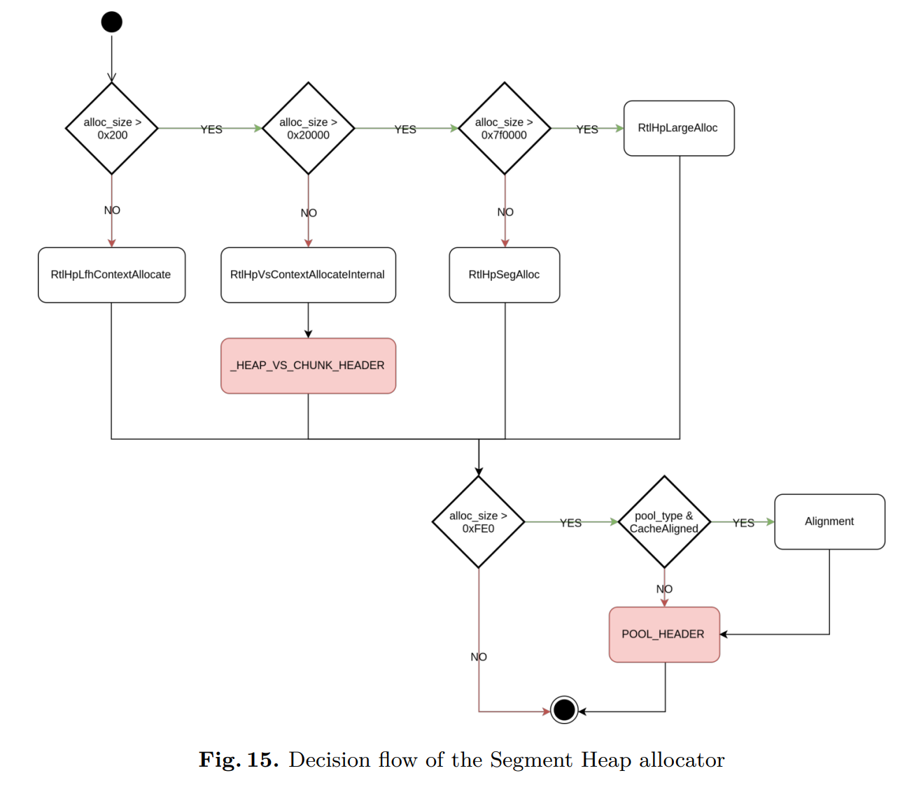
用于分配一个更大的堆块。
还有一个就是攻击PoolType也就是Aligned Chunk Confusion打法
free的chunk CacheAligned位被设置分配器会去根据prevsize找到first header
1 | if ( AlignedHeader -> PoolType & 4 ) |
Segment Heap推出后一些check被消除了，可能后续会被重新启用，因为之前提过first header后可能会紧跟这一个指针。这个指针没有在free的时候被check。
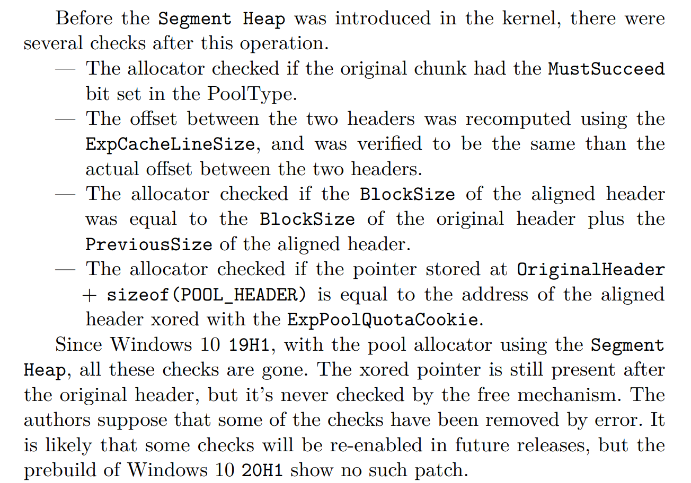
Aligned Chunk Confusion
SSTIC2020那篇slides提到了这个打法，适用于paged or nonpaged pool
利用条件是溢出四个字节，且previoussize和pooltype这俩处可控。
简单介绍下这个打法。
最终利用的打法还是Quota Process Pointer Overwrite来达成任意地址减一（不了解的可以看我之前写的win7 kernel pool的博客），因为win8后多了mitigation。
ProcessBilled = addrof(EPROCESS) ⊕ addrof(Chunk) ⊕ ExpPoolQuotaCookie
所以在伪造eprocess前需要先有个任意读来leak。
slides里面以pagedpool为例用的结构体是
1 | struct PipeAttribute { |
和file ea差不多name用来查找，value用来存放。只要能修改value的指针就能达成任意地址读取，因为三环没有提供修改value的api所以任意地址写目前还不能。
下面介绍下Aligned Chunk
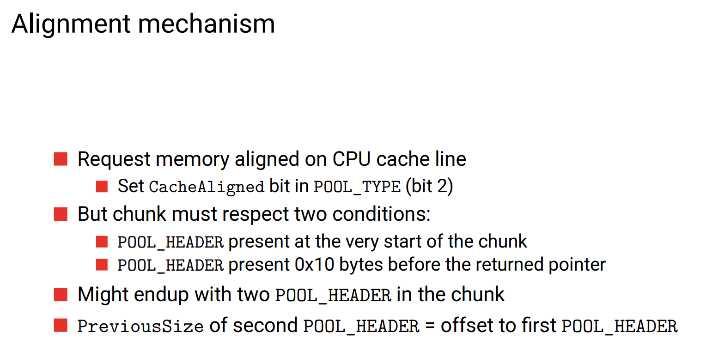
当free时会根据prevsize去找到真正的pool header，在segment heap提出前会有很多check，现在都没了，详细可以看slides这边不多赘述。
所以要想利用现实设置好溢出堆块的pooltype为Aligned Chunk然后是prevsize，根据prevsize可以定位到我们伪造的fake header处
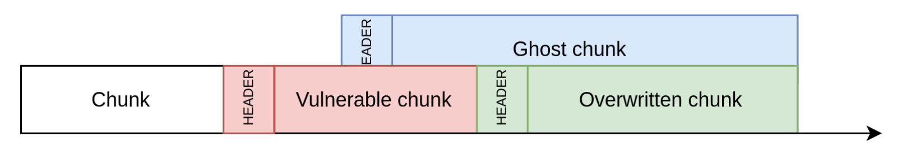
下面调用NtfsControlFile来往fakechunk处分配一个pipeattribute结构体。接着利用再次调用NtfsControlFile来leak。
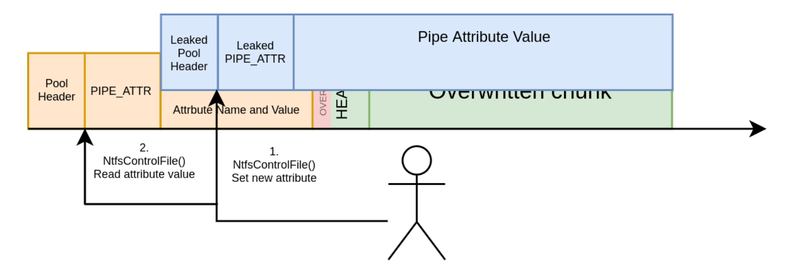
然后把前面的pipeattr free后再分配一个并伪造listentry，伪造一个pipe再用户态地址
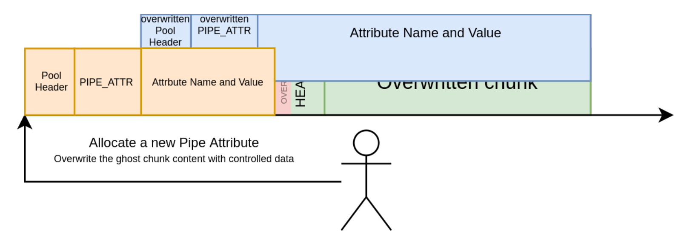
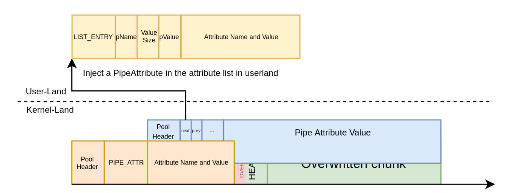
设置指针为之前leak的值即可。
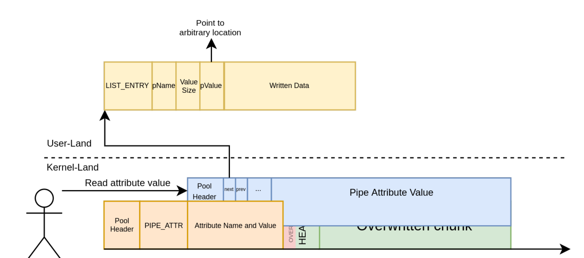
利用任意地址读可以leak出ExpPoolQuotaCookie，EPROCESS和token地址。
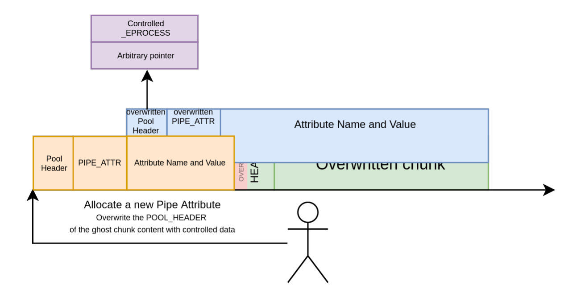
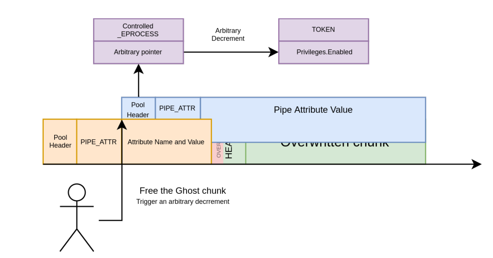
接着配合任意地址减一，注入代码到winlogon即可达成提权。
有几个注意点
构造的fake header的blocksize至少是0x21
因为0x200以下都会使用LFH，我们必须用vs分配器才能利用dynamic lookaside list所以至少0x200，对应的chunk大小是0x210.
另外，win7里面这个打法只需要减一次Privileges.Enabled在低权限一般都为0x0000000000800000，减一后是0x000000000007ffff有了SeDebugPrivilege。
但是在win10，内核会利用AdjustTokenPrivileges来check，Privileges.Present & Privileges.Enabled
Privileges.Present在低权限下一般都是0x602880000然而
0x602880000 & (1«20) == 0
所以如果在低权限下还需要再次利用一波，需要再次对Privileges.Present进行减一操作。
其次
漏洞块大小至少0x130，否则ghost会覆写漏洞快，会被分配到漏洞快之前。vs chunk和lfh chunk有一些区别，大部分vs chunk都会多一个vs header，这意味着需要溢出至少0x14字节而且需要修复vs header。并且要注意free的时候得保证不会触发merge操作。
Non-Paged POOL
https://github.com/vp777/Windows-Non-Paged-Pool-Overflow-Exploitation
这个打法就复杂很多了，针对的是nonpaged pool，这个洞之前我也看过，品相并不是很好。这个作者提出的打法适用于很多种情况可以达到任意读写。后续单独开篇文章写下。
SSTIC2020文章里也给出了一个结构体用于利用。
1 | struct PipeQueueEntry |
1 | if ( PipeQueueEntry -> isDataAllocated == 1 ) |
当isDataInKernel被设置成1后，data不会直接存放在结构体后。会放在linkedIRP中，我们可以通过修改linkedIRP指针到用户态并设置好对应的SystemBuffer，就可以达到任意地址读。